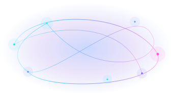

BUILT FOR ONE-PERSON BUSINESSES
Build a website.
Create your own app.
Run your business.
Busy Does It — the team behind your one-person business. One AI assistant to help you build, find customers and get back to life.
Websites, apps, marketing, customers and invoices — all designed to work together.
In development · Example website is fictional.

Brand illustration · voice demo not active on this website
SIX WAYS BUSY HELPS
What would you like Busy to do?
Busy is still being developed. These are our planned connected capabilities, not features available to subscribe to today.
DETAILS, IF YOU WANT THEM
Six simple ways to get more done.
Tap any area for a simple explanation. You don't need to know the technical words.
Website BuilderA professional site you can make your own
Tell Busy about your business. Busy is being developed to prepare a responsive website, let you review every detail and help you make changes without technical jargon.
Explore the premium website concept ↗In development · The premium showcase is an illustrative concept, not verified output from the current automated builder.
App BuilderTurn your idea into an app
From customer mini-apps to bespoke standalone applications, Busy is being designed to help you explain the app you want and review it as it takes shape.
In development · Bespoke generation and app-store publication are not active here.
Content CreatorMake posts and promotions
Prepare social posts and promotional material using the brand and business information you approve, while keeping control over what gets published.
In development · No real posts are sent from this website.
Get More CustomersHelp people discover your business
Busy aims to identify opportunities and prepare practical ways to win work, so you can concentrate on serving your customers.
In development · No advertising or outreach is triggered here.
Inbox & BookingsKeep customers and your day organised
Bring enquiries, customer conversations and booking requests together, with a clear difference between a request and a confirmed booking.
In development · No customer forms are active on this preview.
Quotes & InvoicesMake getting paid easier
Prepare quotes, invoices and follow-ups with owner approvals. Bookkeeping and tax preparation are part of our longer-term vision.
In development · No payments are processed here.
These are planned connected capabilities. We'll be clear when each feature is ready.
NOT JUST ANOTHER TEMPLATE
See the kind of website
Busy can build for your business.
Imagine a professional website with your own colours, services, images and a clear way for customers to reach you. Explore our premium exterior-cleaning design concept and picture what Busy could create for your business.
Explore the website exampleIllustrative design concept, not a live customer site or verified output from the current automated builder. See the earlier builder-generated example.
DESIGNED AROUND YOU
You tell Busy.
Busy does it.
Not another complicated dashboard. Just a straightforward conversation, a helpful next step and a clear opportunity to approve what happens.
See where we're heading- 01
Tell Busy what needs doing
Talk or type naturally. You shouldn't need to know the technical words.
- 02
Busy prepares the work
Connected tools help plan the next step, using the business details you've approved.
- 03
You stay in control
See what was prepared, what needs approval and what has genuinely been completed.
THE REAL BUSINESS BEHIND BUSY
“I wanted more time for life outside work.”
A genuine photo from the festival stall can be added here with the founder's approval.
WHY I STARTED BUSY
Built by a small-business owner,
for small-business owners.
I run Slow Roast, a festival catering business. I know what it's like to juggle customers, admin and long working days.
That's why I'm building Busy: to give people running businesses like mine the support of a team — and more time to enjoy life outside work.
NO TECHNICAL KNOW-HOW NEEDED
Powerful underneath.
Simple on the surface.
Transparent when you want to look deeper. Busy is designed to explain what it's done, what still needs approval and what hasn't been verified.
How will Busy work? ↗A FEW GOOD QUESTIONS
Curious about Busy?
Can I subscribe to Busy Does It yet?
Not yet. Busy is in active development. We'll confirm pricing, availability and supported features when they're ready; this site doesn't collect payments or sign-ups.
Is Busy only for one type of business?
No. It's being designed for sole traders and small teams across trades, hospitality, retail, creative services and more.
Is the sample website a real customer site?
No. The premium ClearFlow example is a fictional design concept showing what we're working towards, not a real customer site or a claim that Busy’s current builder generated that exact design. You can also view our earlier builder-generated draft for an honest comparison.
Will Busy do things without my approval?
Important customer-facing actions, spending and publication are designed to require clear permissions and review. We'll be transparent about what is actually implemented.
A LITTLE MORE FREEDOM IS ON ITS WAY
Something useful
is taking shape.
Busy isn't ready for subscriptions yet. When early access opens, we'll provide a clear, consent-based way to register interest.
No signup or payment is collected · The sample is a fictional design concept